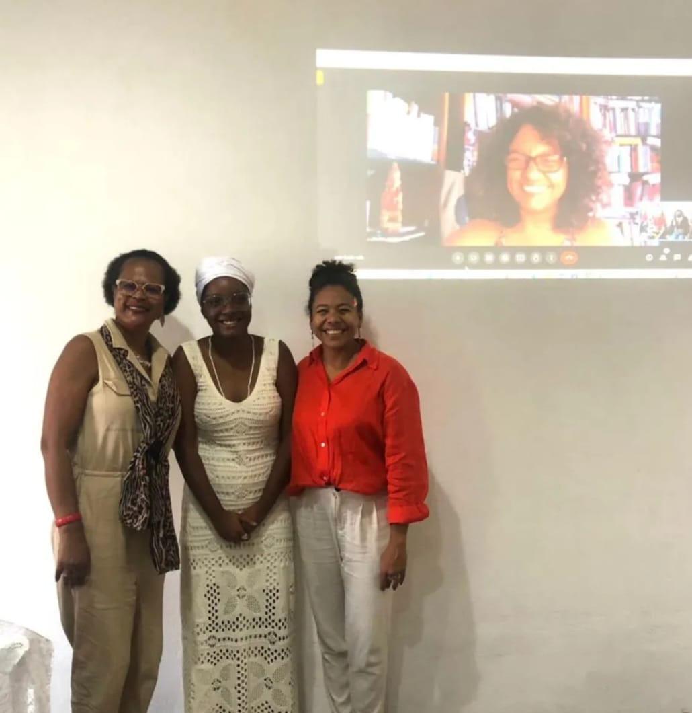
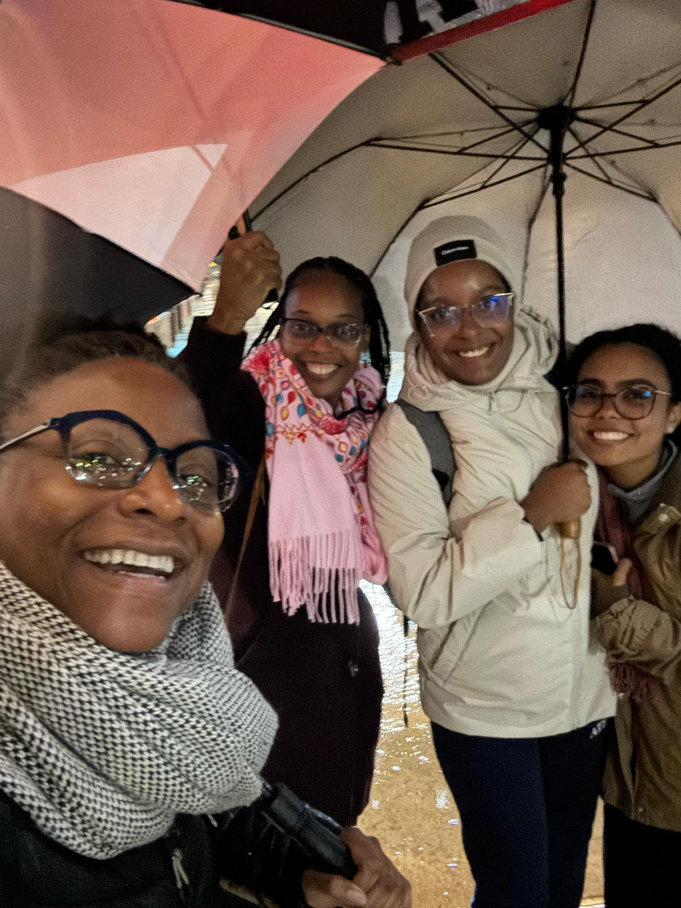
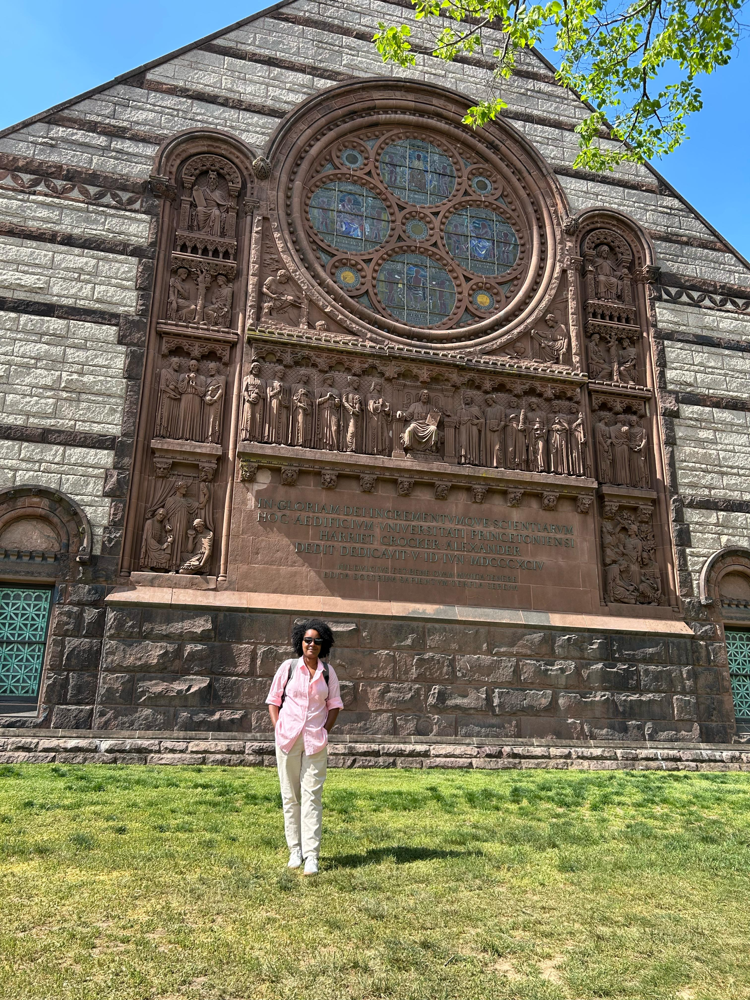
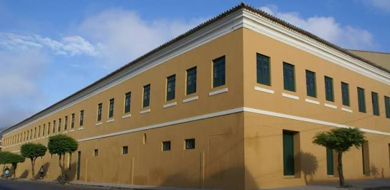

2023 · Cachoeira
Defesa de TCC
No Arquivo Público Municipal de Cachoeira, Camila registrou a defesa do Trabalho de Conclusão de Curso, com banca composta por Luciana da Cruz Brito, Isabel Cristina Ferreira dos Reis e Denise Carrascosa.
Trajetória de egressa
Da permanência estudantil e do PIBID à pesquisa sobre mulheres negras, ao mestrado e à circulação acadêmica internacional.
2017.1–2023.2
Camila ingressou no Curso de História em 2017.1 e concluiu a graduação em 2023.2. Em seu depoimento, apresenta Cachoeira e a UFRB como espaços inseparáveis de sua formação intelectual e pessoal, destacando debates sobre pós-abolição, diáspora africana, raça e desigualdades sociais.
Sua narrativa também registra a importância das políticas de permanência estudantil, do PIBID, da iniciação científica, da extensão e do Seminário Propedêutico de História em sua trajetória.
Memórias do curso

No Arquivo Público Municipal de Cachoeira, Camila registrou a defesa do Trabalho de Conclusão de Curso, com banca composta por Luciana da Cruz Brito, Isabel Cristina Ferreira dos Reis e Denise Carrascosa.
O PIBID marcou seu primeiro contato mais próximo com a sala de aula da educação básica e consolidou a percepção do ensino de História como prática de escuta e diálogo.
Com orientação de Luciana da Cruz Brito, desenvolveu pesquisa de iniciação científica financiada pela FAPESB e participou de experiências de extensão, monitoria e tutoria.
Depois da graduação

Durante o mestrado, realizou intercâmbio nos Estados Unidos por meio da Bolsa CAPES Abdias Nascimento, com supervisão de Keisha-Khan Y. Perry na University of Pennsylvania.

Participou de workshop na Princeton University durante o período de intercâmbio, em atividade com docentes, pesquisadores e estudantes.

Segue desenvolvendo pesquisa no Mestrado em História da África, da Diáspora e dos Povos Indígenas da UFRB, articulando raça, gênero, religiosidade e poder.
Depoimento
Camila associa sua formação ao encontro entre universidade, cidade e políticas de permanência. Em seu relato, destaca que o apoio da Pró-Reitoria de Políticas Afirmativas e Assuntos Estudantis foi decisivo para sua continuidade no curso e para a compreensão de que o acesso à universidade precisa ser acompanhado de condições efetivas de permanência.
Ela também relembra o PIBID, a iniciação científica, o projeto de extensão Xirê das mulheres, o que você toca? e a criação, em 2021, do Seminário Propedêutico de História, que continuou coordenando como forma de acolher novos estudantes. A pesquisa iniciada na graduação sobre a criminalização de mulheres negras em Salvador no pós-abolição tornou-se a base do trabalho que desenvolve no mestrado.